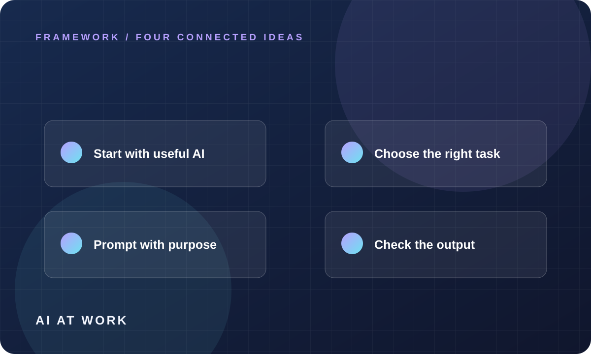
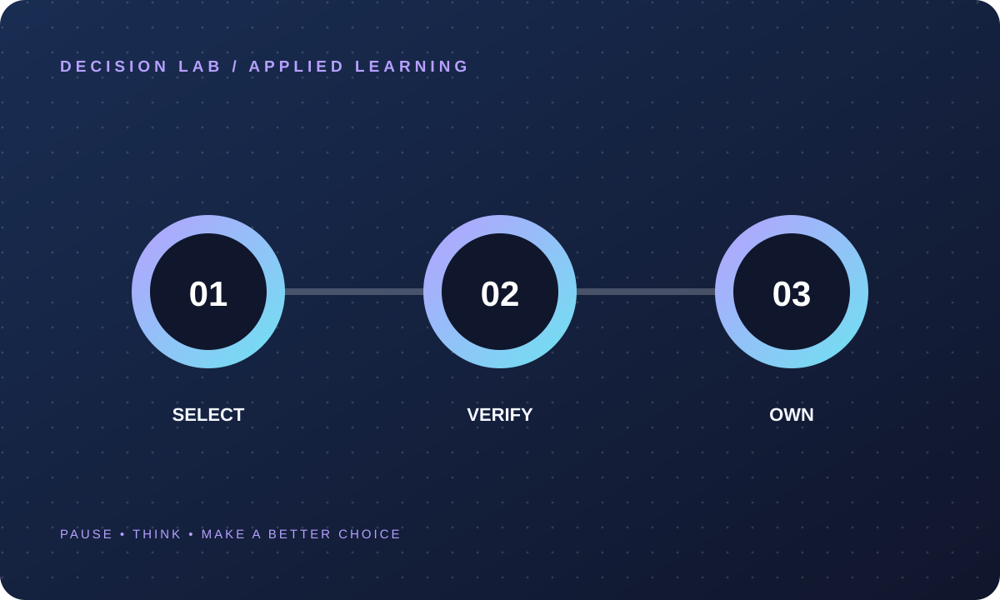

Distinguish appropriate support tasks from decisions requiring specialist human judgement.
AI & DIGITAL SKILLS / INTERACTIVE HTML COURSE
AI at Work
A practical guide to responsible AI use, from task selection and prompting to verification, privacy and human accountability.

VISUAL LEARNING EXPERIENCESHAY-ID / 03
SCROLL TO EXPLORE ↓
01 / COURSE OBJECTIVES
What you will be able to do.
By the end of this learning experience, you should be able to demonstrate these practical outcomes. Use them as a lens while you explore the chapters and make decisions.
Construct clearer prompts using context, task, audience, format and constraints.
Review AI-generated content for factual accuracy, bias, relevance and completeness.
Apply data-protection, privacy, security and intellectual-property precautions.
Explain why human review and accountability remain essential when AI is used.

02 / YOUR LEARNING MAP
Six steps. One connected journey.
Each chapter builds on the previous one, moving from awareness to a more confident workplace response.
Choose the right task
AI is an assistant, not an authority
Prompt with purpose
Match value, risk and oversight
Review the output
Give the model context, task and boundaries
Protect information
Accuracy, bias, relevance and completeness
Keep humans accountable
Privacy, security and intellectual property
Build responsible habits
Use judgement, disclosure and oversight
03 / EXPLORE THE CONTENT
Learn it. Connect it. Apply it.
Read through each chapter, examine the visual cues and consider how the ideas translate into day-to-day work.
CHAPTER 01 / START WITH USEFUL AI
AI is an assistant, not an authority
Generative AI can help draft, summarise, brainstorm, classify and explain. Its value depends on the task, the quality of the input and the review that follows. It can also produce confident errors, reflect bias or omit important context. Treat the output as a starting point. The person using it remains responsible for checking whether it is fit for purpose.
- Use AI for suitable support tasks, not unreviewed high-impact decisions.
- Treat generated content as a draft, not a verified answer.
- Follow the organisation’s approved tools and acceptable-use policy.
DESIGN TAKEAWAY
The useful question is not “Can AI do this?” but “Should AI help with this task?”
The useful question is not “Can AI do this?” but “Should AI help with this task?”
CONCEPT / 01
CHAPTER 02 / CHOOSE THE RIGHT TASK
Match value, risk and oversight
Good use cases are usually well-defined, reversible and easy for a person to verify. Examples include brainstorming, creating a first draft, summarising non-sensitive material or generating practice examples. Tasks involving personal data, confidential content, legal or financial advice, employment decisions or safety require additional controls and may be prohibited by policy.
- Start with low-risk tasks where a person can verify the result.
- Assess sensitivity, potential harm and the consequences of an error.
- Escalate high-impact or specialist decisions to qualified people.
DESIGN TAKEAWAY
A task with serious consequences needs stronger controls than a quick first draft.
A task with serious consequences needs stronger controls than a quick first draft.
CONCEPT / 02
CHAPTER 03 / PROMPT WITH PURPOSE
Give the model context, task and boundaries
A clear prompt explains the situation, what is needed, who the audience is and what a useful answer should look like. Add constraints such as tone, length, source requirements or exclusions. Provide only information the tool is approved to receive. Iterate by identifying what is missing rather than asking for “something better” without direction.
- Describe the context and intended audience.
- State the task, format, tone and constraints explicitly.
- Ask for assumptions or uncertainties to be identified, not hidden.
DESIGN TAKEAWAY
Specific context and clear boundaries make an AI response easier to evaluate.
Specific context and clear boundaries make an AI response easier to evaluate.
CONCEPT / 03
CHAPTER 04 / CHECK THE OUTPUT
Accuracy, bias, relevance and completeness
AI-generated text can sound authoritative even when wrong. Verify facts against reliable sources, check calculations independently and confirm that cited sources exist and support the claim. Look for outdated information, missing perspectives, stereotypes and language that does not fit the audience. High-stakes content needs expert review, not just proofreading.
- Verify important claims against authoritative sources.
- Check calculations, citations, dates and completeness independently.
- Review for bias, accessibility, tone and audience fit.
DESIGN TAKEAWAY
A polished answer is not necessarily an accurate answer.
A polished answer is not necessarily an accurate answer.
CONCEPT / 04
CHAPTER 05 / PROTECT PEOPLE AND INFORMATION
Privacy, security and intellectual property
Do not enter personal, confidential, regulated or proprietary information into a tool unless the organisation has approved that use and the necessary safeguards are in place. Check data retention, access and sharing rules. Respect copyright, licensing and confidentiality. Use anonymised or synthetic examples when appropriate and permitted.
- Use only approved tools and approved data categories.
- Remove or mask sensitive information when required.
- Respect confidentiality, copyright and intellectual-property rules.
DESIGN TAKEAWAY
Before you paste, ask whether the information is approved for that tool.
Before you paste, ask whether the information is approved for that tool.
CONCEPT / 05
CHAPTER 06 / KEEP HUMANS ACCOUNTABLE
Use judgement, disclosure and oversight
AI can support a decision, but it does not take responsibility for its consequences. A person must evaluate the result, decide what to use and correct what is wrong. Disclose AI assistance when policy, audience expectations or the context requires it. Keep a record of material AI use where the organisation expects one and know when to stop and seek expert help.
- Review and own the final work product.
- Disclose AI use when required by policy or context.
- Escalate uncertainty, harm or policy conflicts instead of guessing.
DESIGN TAKEAWAY
Human accountability is the control that turns AI assistance into responsible work.
Human accountability is the control that turns AI assistance into responsible work.
CONCEPT / 06
04 / DECISION LAB
What would you do next?
Use the ideas from the course in a short workplace situation. Select the response you would take and review the feedback.

WORKPLACE MOMENT / APPLY YOUR JUDGEMENT
You are preparing a client-facing report. An AI tool drafts a confident paragraph with statistics and three citations. You have not checked the figures or the sources.
Choose the most appropriate response.
05 / KNOWLEDGE CHECK
Make the learning stick.
Answer five questions to check your understanding. Submit when you are ready to see your score and review the explanations.
YOUR NEXT STEP
Take the idea
into your work.
Choose one action from this course to apply in your next relevant task or conversation. Learning becomes valuable when it changes what we notice, decide or do.